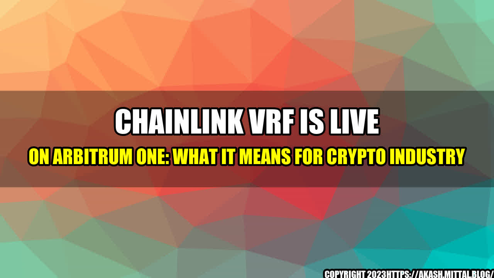

The Magic of Chainlink VRF: An Opportunity for the Crypto Industry

Imagine a fair game with the highest level of transparency possible. A game where players have equal chances of winning, and no one can manipulate the results. This has always been the ultimate goal of the gaming industry. But achieving such fairness has been quite challenging, especially in the online gaming world. Now, thanks to Chainlink VRF, things might just take a turn for the better.
Chainlink VRF, also known as Chainlink Verifiable Random Function, is a solution that generates random numbers on a blockchain network without interference from anyone, not even the smart contract developers. It is a tamper-proof way of selecting random data that is increasingly becoming popular in the online gaming industry. Recently, Chainlink VRF went live on Arbitrum One, a Layer 2 scaling solution, which has received a lot of attention in the crypto industry. We shall look at what this means for the crypto industry.
The Benefits of Chainlink VRF on Arbitrum One
Chainlink VRF on Arbitrum One provides several benefits to the gaming industry. Some of the benefits include:
Complete trust in the system - Chainlink VRF is a trusted and reliable source that cannot be manipulated by anyone. Its unbiased selection process guarantees fairness and transparency for all gamers.
Efficient and secure - Using Chainlink VRF on Arbitrum One improves security and efficiency in gaming since every action is completed on-chain, reducing unnecessary intermediaries.
Scalability and flexibility - Blockchain gaming platforms can easily integrate Chainlink VRF into their system. Additionally, Arbitrum One's scalability ensures that the gaming experience can accommodate a large number of players without slowing down the system.
Real-world Examples of Chainlink VRF on Arbitrum One
The use of Chainlink VRF on Arbitrum One has several practical applications in the gaming industry. Here are some prime examples:
Lotteries - Chainlink VRF allows lotteries to run fairly and transparently, ensuring the winners are chosen using tamper-proof random selection, providing an equal chance to all participants.
Randomized items - With Chainlink VRF, gaming platforms can introduce randomized items, such as skins or weapons in video games. The chances of acquiring these items would be dependent on luck rather than the gaming company's manipulations.
Crypto gaming - Cryptocurrency has gained popularity in gaming, and Chainlink VRF provides a safer and more transparent way to earn rewards in games reliant on cryptocurrency.
Conclusion: Opportunities for the Crypto Industry
Chainlink VRF on Arbitrum One offers numerous benefits to the crypto industry. In conclusion, we highlight the top three areas that it has the potential to revolutionize:
Gaming Industry - Chainlink VRF can make gaming fairer, more secure, and transparent. Furthermore, it makes it possible to securely integrate rewards paid in cryptocurrency.
Decentralized Finance (DeFi) - With Chainlink VRF, DeFi developers can create trustless, unbiased, and transparent prediction markets. This can transform insurance and betting markets by providing predictable outcomes without the need for an intermediary.
Blockchain Oracles - Chainlink VRF can be used in conjunction with other Chainlink oracles to provide reliable and trustworthy data feeds on the blockchain.
The future of gaming lies in transparency and fairness, which can only be achieved with blockchain technology. Chainlink VRF on Arbitrum One provides a unique opportunity for the gaming industry to create games with a provably fair infrastructure, leading to increased adoption and a rise in the value of cryptocurrencies.
Curated by Team Akash.Mittal.Blog
Share on Twitter Share on LinkedIn